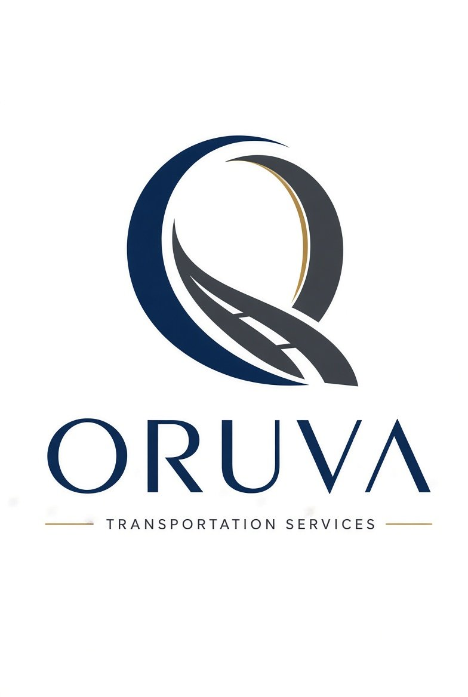

Our Mission
To organise Nigeria's fragmented transport into one trusted platform where riders move safely at a fair, known price; drivers earn with dignity and access finance; and businesses of every size can reach people on the move.
Organised mobility · Nigeria → Africa
Oruva is the mobility ecosystem Nigeria has been waiting for — safe, verified rides with landmark-based pickups and upfront fares, shared rides that cut costs, moving & haulage on demand, an in-app entertainment hub, a living rider community, and payments on both fiat and blockchain rails through the ORVA token.

About Oruva
Transport moves everything in Nigeria — people, goods, trade and opportunity. Yet for millions, moving is still unreliable, unsafe, expensive and fragmented: fares you cannot predict, vehicles you cannot trust, informal operators working in silos, and towns beyond the big cities left off the map entirely.
Oruva Transportation Services is building the organised alternative: a technology-driven platform designed around how Nigeria actually moves — local landmarks, real-world connections, community trust and multiple ways to pay. We take the best of every platform riders already know, fix what each of them leaves out, and add the layers none of them offer: community, entertainment, and a token-powered economy that rewards the people who make movement happen.
Our Mission
To organise Nigeria's fragmented transport into one trusted platform where riders move safely at a fair, known price; drivers earn with dignity and access finance; and businesses of every size can reach people on the move.
An Africa where no town is too small, no landmark too local, and no person too unbanked to move, earn, connect and be entertained — on one elegant platform.
Upfront fares. Verified drivers. Landmark pickups that understand local context. Payments that work with cash-era habits and crypto-era tools alike. And a community that travels together.
Problem & Solution
Features
Oruva brings together the strengths riders love in platforms like Uber, Bolt, inDrive and Lagride — reliability, affordability, fare negotiation culture and scheduled professionalism — and closes the gaps every one of them leaves behind.
Landmark-based pickups, clear upfront fares, route previews and pickup notes written the way people actually describe places.
Split the fare, not the comfort. Oruva Shared matches riders going the same way — cutting cost per trip, traffic and emissions.
Verified and trained drivers, tiered identity checks, trip sharing, safety tools and two-way ratings on every journey.
Household goods, luggage and furniture moved on demand through the same trusted platform — no informal guesswork.
Low-bandwidth and offline-friendly flows designed for real Nigerian conditions — not just the city centre at full bars.
Tools for fleet owners and transport companies to organise vehicles, drivers and routes inside one system.
Paystack-powered fiat payments alongside ORVA and multi-chain blockchain payments. Drivers choose how they are settled.
Loan partnerships and savings plans that help drivers repair, maintain and eventually own their vehicles.
Referrals, in-app rewards and Oruva Points that convert into ORVA — loyalty that pays the community back.
Bridging the Gap
Global apps cluster in rich city centres. Oruva starts in Osun's cities and towns — Osogbo, Ile-Ife, Ilesa, Ede and underserved communities — and grows with field data from the ground, through Lagos, Oyo and Abuja, then nationwide and across Africa.
Between informal transport people rely on and formal platforms they don't. Verified drivers, community mapping and local context turn everyday trust into platform trust.
Between cash, bank and crypto. Fiat and ORVA rails side by side mean no rider or driver is locked out by how they hold money — and drivers gain a path to loans and savings.
Between big platforms and the small retailer on the roadside. Oruva's advertising and commerce layer lets a roadside business reach moving customers like a big brand can.
A ride is treated as a transaction elsewhere. At Oruva it is a connection — rider networking, shared journeys and community that continues after drop-off.
Hours spent in transit are dead time on other platforms. Oruva turns them into entertainment, discovery and earning time.
Long-Term Impact
Drivers, fleet partners, agents, community mappers, support and local operations roles — every new city Oruva enters creates work directly, and unlocks more work indirectly.
Driving income, shared-ride earnings, referral rewards, ORVA rewards, advertising income for partners and new trade for businesses along every route.
When people and goods move reliably, markets widen. Traders reach customers, workers reach jobs, students reach school — and whole towns join the economy.
Predictable fares, landmark pickups and shared rides make daily movement simpler, cheaper and less stressful for everyone.
Lower transport costs, safer journeys and driver finance reduce the daily hardship that unreliable movement imposes on families.
From driver savings and loans to the ORVA token economy, Oruva creates new ways for ordinary people to build capital — and for businesses from multinationals to small retailers to grow.
Entertainment Hub
Oruva's Entertainment Hub is being built into the ride experience — so travel time becomes time riders enjoy, creators earn from, and brands pay to be part of.
Riders share and play favourites from the streaming platforms they already love, and set the soundtrack for shared rides.
A movie hub designed around streaming favourites — including global platforms like Netflix and African storytelling platforms — curated for the length of your trip.
A dedicated home for African film, music and creators — Nollywood and beyond — giving local content a moving audience.
Cinema that travels: scheduled mobile-cinema rides and event journeys that bring the big screen to towns without one.
Discover events, book tickets and ride there in one flow — Oruva gets you to the show and into it.
Transport-integrated advertising for brands big and small — relevant offers along real routes, not noise.
Entertainment integrations are rolling out in phases with content and platform partners; the hub ships first with music sharing, curated African content and event journeys.
The ORVA Ecosystem
ORVA is the official token of the Oruva ecosystem, built on Solana for speed and low cost. It aligns everyone on the platform — riders, drivers, businesses and the community — around one shared economy, instead of value leaking out to distant platforms.
Earn it, spend it, govern with it: ORVA powers payments, rewards and community decisions, while Oruva Points lets anyone start earning toward ORVA today.
Paying with ORVA inside Oruva is gas-free for the user — Oruva's payment hub covers the network cost, so a fare costs exactly the fare. Only on ORVA.
ORVA holders help steer the ecosystem — voting on community priorities, new-city expansion and ecosystem features.
A growing community of riders, drivers and supporters building the network city by city, rewarded for growing it.
Invite friends, complete trips, contribute local knowledge — and earn rewards in-app, convertible within the ecosystem.
A multi-chain payment hub alongside Paystack fiat rails: transparent, fast settlement for drivers who choose crypto.
Start now at points.oruva.com.ng — complete tasks, build your balance and grow with the ecosystem.
Riders Networking & Community
Every other ride app ends at drop-off. Oruva begins there. The Socializing Room is Oruva's in-app social home: a discovery feed where riders, drivers and local businesses post, connect and build the community that travels together — before, during and after the trip.
The Home feed is personalised discovery — it shows you your city, your routes and people like you, not only accounts you already follow. There is always something new from the world moving around you.
For You is algorithmic — shaped by your city, routes and interests. Following is purely the riders, drivers, creators and businesses you chose. Switch between them with one tap.
One endless, thumb-friendly vertical scroll of posts, photos, short videos and road moments — designed for one hand, on the move, even on modest connections.
Recommended posts and clearly-marked advertisements from local businesses and brands are inserted naturally between posts from people you follow — discovery for riders, affordable reach for businesses, revenue for the ecosystem.
Every post works the same way, so anyone can join in instantly: Like · Comment · Repost / Share · Save / Send. No learning curve — the grammar of the Room is the grammar people already know.
The Home icon in the bottom bar always brings you back to the top of the Room and refreshes your feed — a fresh look at what your city is saying, every time you return.
Friendship is two-way and confirmed by both sides. Friends are your trusted circle: people you travel with, share rides with, share trips with for safety, and see first in your feed.
Following is one-way and instant: follow riders, drivers, creators and businesses you find interesting — no approval needed. Their public posts fill your Following feed, and they can gather followers of their own.
The Room suggests people and pages worth connecting with — riders on your regular routes, drivers you have travelled with, mutual friends, and businesses in your city — so your network grows even before you search.
In short: friends are who you trust, followers are who you reach. A driver, creator or business can build a public following, while keeping a private circle of friends — both living side by side in the same Room.
Some posts cannot wait in a feed. Red Alerts are Oruva's urgent alert layer inside the Socializing Room: when something on the road affects people's safety or movement, the alert rises above the ordinary feed for everyone in the affected area.
Gridlock, road closures, flooding, accidents, diversions and dangerous road conditions — reported and updated in real time, so riders and drivers can re-route before they are stuck.
Security incidents, unsafe areas, scams targeting riders and drivers, and official safety advisories — keeping the whole community aware, alert and looking out for one another.
Red Alerts are location-based — you see the ones on your route and in your city, pinned above the Home feed while they are active. Official and verified reports lead; community reports are confirmed by other members, so the Room stays trusted and free of panic or rumours. Every alert can be saved and shared with one tap, so a warning can protect friends and family beyond Oruva too.
Find people going your way, arrange shared rides, and share the moments from the road — photos, videos, stories from real journeys.
Landmark tips, route updates, traffic and safety alerts from the community — the same local knowledge that makes Oruva pickups the most accurate in Nigeria.
Driver stories, rider connections, and posts from the small retailers and big brands along your routes — a marketplace of attention built on real movement.
Connection, not just transportation: friends made on shared routes, help from a community that knows your city, and creators and drivers rewarded in-app — including through the ORVA ecosystem — for content the community loves.
The Room turns a ride app people open when they travel into a community people open every day — retention, organic growth, first-party local insight and premium advertising inventory, all compounding with every city Oruva enters. Verified rider/driver identities and community moderation keep it trusted and safe.
Partners
Oruva is being built as an open ecosystem. We are developing partnerships across the industries that movement touches — and we welcome futuristic technology companies who want to build Africa's mobility future with us.
Partner categories shown are the ecosystem Oruva is actively building. To discuss a partnership, write to us at partners@oruva.com.ng.
Roadmap
For Investors
Every day, millions of journeys happen in Nigeria despite the system — not because of it. Whoever organises that movement owns a foundational layer of the economy: payments, commerce, advertising, entertainment and data, all flowing through one trusted platform. That is the position Oruva is building, starting where global competitors do not go.
Oruva is raising a pre-seed round of $150,000–$250,000 to accelerate technology, fleet and operations, marketing, and legal & compliance — and to take field-validated demand in Osun into Lagos, Oyo and Abuja.
Ride fares · driver & fleet services · moving & haulage · advertising · entertainment & ticketing commissions · financial services · ORVA ecosystem activity.
Landmark data, community trust, driver finance relationships and a token economy competitors cannot copy by launching an app.
Jobs, incomes, capital access and growth for businesses of every size — the outcomes funders and markets increasingly reward.
Investor & partner enquiries: partners@oruva.com.ng — every enquiry is answered by the founding team. Follow the movement: @Oruvatransport on X, Instagram, Facebook and Discord.
Questions
Oruva is field-testing across 5+ cities and towns in Osun State — including Osogbo, Ile-Ife, Ilesa and Ede — with Lagos, Oyo and Abuja as the next beachhead markets, then nationwide and across Africa.
Oruva combines their strengths — reliability, affordability, fare transparency and professionalism — and adds what they leave out: landmark-based pickups, low-bandwidth flows, underserved-town coverage, driver finance, shared-ride community, an entertainment hub and the ORVA token economy.
ORVA is Oruva's official ecosystem token on Solana. It powers gas-free in-app payments, rewards, referrals and community governance. You can start earning toward ORVA today through Oruva Points.
Verified drivers get organised demand, a choice of fiat or ORVA settlement, access to loan partnerships and savings plans, rewards — and a community that treats driving as a profession, not a gig of last resort.
Through transport-integrated advertising, event and ticketing partnerships, fleet and logistics services, and the ORVA payment hub — reaching customers while they move.